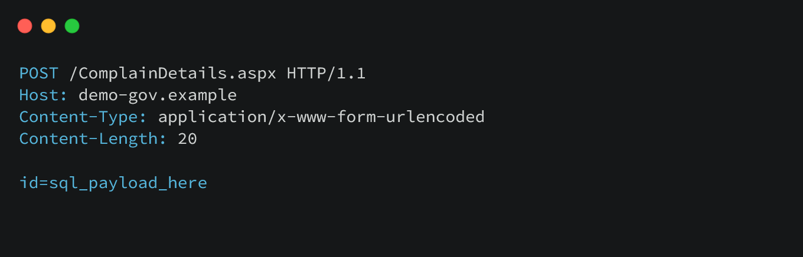
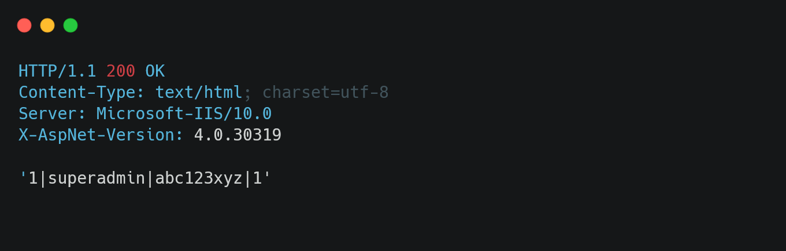

Note:
Before going further, I want to make it clear that I will not be publishing the real website details, domain, credentials, or sensitive technical information in this write-up. Government websites can take considerable time to patch publicly reported vulnerabilities, and publishing those details before remediation could unnecessarily expose the affected system to further abuse. I have already responsibly disclosed the vulnerability to the CERT-In team and provided the relevant information needed for investigation and remediation.How I came around the website
I know that many Indian government websites are quite old and are not properly maintained. So, I thought of using Google dorking to identify different Indian government websites that might have interesting endpoints and potentially serious security issues. The first thing that came to my mind was login functionality, so I created a few Google dorks to search for publicly accessible login pages.
inurl:login.php or inurl login.aspx Exploitation
Now that I had found a number of potentially interesting pages to test, I decided to take one of the websites and start looking for SQL Injection vulnerabilities. The login page itself didn't appear to be vulnerable, but while going through the different pages of the website, I came across a page that allowed users to check the status of a complaint using their complaint ID.
That immediately caught my attention.
I decided to test the `complaint_id` parameter. When I entered a normal value, such as `1`, the application responded normally. But when I appended a single quote (`'`) to the parameter, the application broke and returned an SQL-related error:
'. Incorrect syntax near '' '
That was the first strong indication that the input was being incorporated into a backend SQL query without being handled safely.
At that point, my suspicion of SQL Injection became much stronger. I then performed a controlled time-based test ' AND SLEEP(5)-- - to determine whether the database query could be influenced by the input. The application's response behavior confirmed that the parameter was vulnerable to SQL Injection.
What initially looked like a simple complaint-status parameter had turned out to be an unexpected entry point into the application's backend.
Dumping the Database
After confirming the vulnerability, I decided to assess how much access the SQL Injection could provide. Using `sqlmap`, I was able to enumerate the database and identify its name and available tables. I then focused on the users table to understand what kind of sensitive information was being stored. The results were more serious than I expected: the table contained an administrator username along with the corresponding password in clear text. This revealed another major security issue: Another bad security practice — storing passwords in plain text in the database. Passwords should never be stored in their original form. They should be protected using a strong, modern password-hashing algorithm with appropriate salting and configuration. In this case, however, anyone who gained sufficient database access could potentially read the credentials directly. The SQL Injection had therefore exposed more than database metadata. It had led to the disclosure of credentials that could potentially provide access to privileged functionality.


Accessing the Admin Panel
With the administrator username and password obtained during the investigation, I proceeded to verify whether the credentials actually provided access to the application's administrative interface. I entered the credentials into the admin login page, and, to my surprise, the authentication was successful. I now had access to the administrative control panel.
Final Thoughts
This experience highlights the need for government agencies to take the security and maintenance of their public-facing websites more seriously. Vulnerabilities such as SQL Injection can have consequences far beyond a single compromised application. If exploited by malicious actors, they could potentially result in financial losses, legal consequences, data exposure, and significant damage to public trust and reputation. What concerns me even more is that this did not appear to be an isolated case. During my research, I came across approximately 8–10 websites with similar security issues. This should be treated as a serious warning sign. Government websites often handle sensitive information and provide services that millions of citizens depend on. They therefore require regular security assessments, timely patching, secure coding practices, proper credential storage, and continuous monitoring.